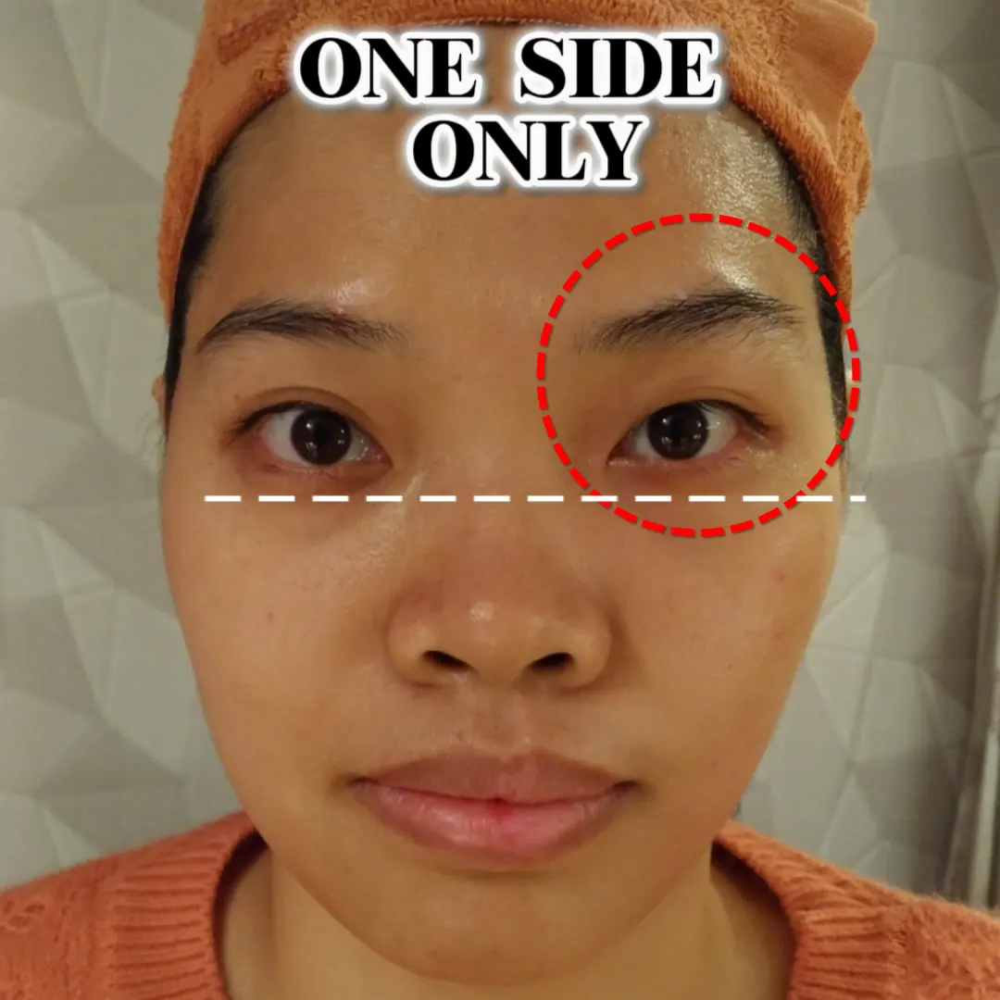

Free 1:18 Above-the-Brow Demo
Watch the first step of Yu-Ting’s eye routine, up close.
In 1 minute 18 seconds, Yu-Ting shows small circles just above the brow, at real speed. When you try it tonight, it takes about a minute per side.
Enter your email to watch the 1:18 demo right away. We’ll also email you a copy to keep. Free, and you can unsubscribe anytime.
Yu-Ting has taught more than 1,000 students in Taiwan, Hong Kong and Malaysia.

In this free 1:18 demonstration, you’ll see
Preview the route shown in the 1:18 video
- Start just above the inner end of the brow.
- End at the tail of the brow. Light circles on the brow bone, never on the eyelid.
Illustration (route only). Watch the 1:18 video for hand placement, angle, and real speed.
- Where step 1 begins: just above the inner end of the brow, shown up close.
- How big each circle is, at real speed, with the pressure Yu-Ting actually uses.
- What the other hand does: it steadies the skin so the stick never drags.
- What to stay away from: the eyelid and the eye itself.
“This step isn’t hard. Most students get it right; the only difference is the size of their circles. You want them in between: not too big, not too small.”Yu-Ting Lan, on this step
No tool needed to watch. Tonight you can try the same step with your fingertips, in about a minute per side. The demo uses a rounded stainless steel stick.
Sound familiar?
You sleep a full night, and your eyes still look tired.
Puffy lids in the morning. Shadows that make you look worn out in photos. That heavy, done-by-noon feeling around the eyes, even when nothing’s wrong.
A tired-looking face can have more than one explanation. The demo teaches a self-care step; it can’t tell you why your face looks the way it does.
One side, one example
One side worked, one side left alone.

In their words
I took the head and face course today. Her careful, patient explanations meant that even I, with no background, picked it up easily. A wonderful class. Mercy W., Taiwan
So attentive, teaching hands-on, and the material was rich and thorough. You’ll come away knowing exactly how to do it. Stephanie L., Hong Kong
Reviews of Yu-Ting’s in-person classes, translated from the original Chinese. Individual experiences vary.

Who’s teaching you
Hi, I’m Yu-Ting Lan.
I’m an international bojin instructor and the founder of Héhé Studio. Over the past several years I’ve taught more than a thousand students across Taiwan, Hong Kong and Malaysia: complete beginners, grandmothers, and men included. This little video is the gentlest possible place to start.
A few quick questions
Do I need any special tools?
No tool is needed to watch. The demo uses a rounded stainless steel stick, and you can try the same step tonight with your fingertips. Stay above the brow bone, avoid the eyelid and eyeball, and stop if it’s uncomfortable.
How long does it take?
The demo runs 1 minute 18 seconds. When you try the step yourself, it takes about a minute per side.
How is bojin different from gua sha?
Gua sha usually sweeps a flat stone across a wide area. Bojin works one small spot at a time, here small circles just above the brow, while your other hand steadies the skin. They do different jobs.
Is this suitable if I’ve never done anything like this?
Yes. The demo is made for complete beginners: one step, slow and gentle, with no rubbing or pulling.
How long until I see a difference?
There’s no promised timeline or visible result. Use the video to learn the movement and notice how your face feels, without trying to force a change.
Is it safe?
It’s a gentle, low-pressure step. It isn’t medical care. If you have a skin or health condition, check with your doctor first.
Start tonight
See the first step, then try it tonight.
Enter your email to watch the 1:18 demo right away. We’ll also email you a copy to keep.
Free. Unsubscribe anytime. · Educational self-care, not medical care.
Want to explore other areas first? See one-side examples · Take the 1-minute tension quiz · Beginner guide